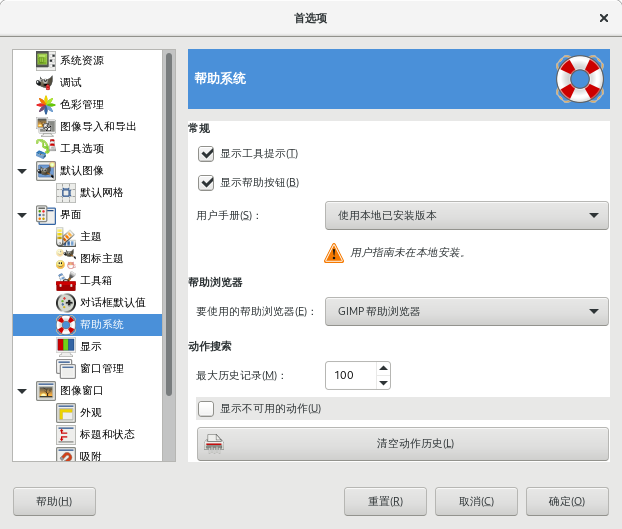

首选项→界面→帮助系统
这里可以设置GIMP的帮助系统。

首选项→界面→帮助系统
显示工具提示
工具提示 是一种小的信息弹出窗口，当鼠标在界面上的某些对象(如按钮或图标)上停留时，就会显示提示信息。如果你不希望显示提示信息，可以在这里取消勾选这个选项。建议勾选，除非你是高级用户。
显示帮助按钮
勾选此选项后，会在每个工具对话框中显示帮助按钮，通过帮助按钮您可直接调用帮助系统。
用户手册
可以在下拉列表中选择用户手册的版本：本地版本或者在线版本。区别在于，如果您安装了本地版本，那么即使您不联网，也可以查看用户手册；而在线版本则要求您必须连接互联网才可以使用。
Linux系统通常需要额外安装这个用户手册，比如Debian，需要通过以下命令来安装本地用户手册(英文版)：
sudo apt install gimp-help-en
帮助浏览器
GIMP帮助是HTML格式，即网页格式。你可以使用GIMP自带的内部浏览器来浏览，也可以用你自己指定的其它网络浏览器来查看GIMP帮助。在这里你可以选择使用哪个浏览器。
实际上，任何现代的网页浏览器都应该是可以的。
最大历史记录
默认值是100，范围是 0-1000 。
显示不可用的动作
勾选此项后，搜索结果中会显示无效动作。
清空动作历史
把动作历史记录全部删除。